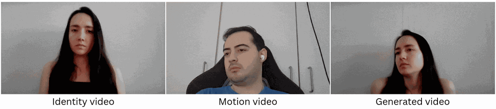
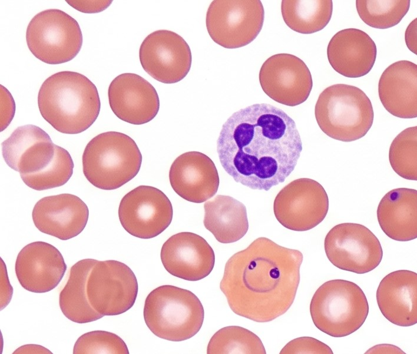
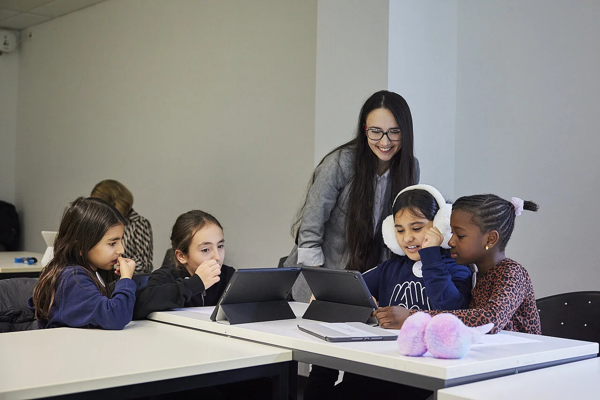

Machine Learning & Applied AI Researcher
Building intelligent, embodied systems that actively engage and augment human capabilities — from multimodal LLM architectures to federated learning frameworks and advanced computer vision pipelines.
About
Machine Learning and Applied AI Researcher, combining a deep technical foundation in machine learning with dual Master's degrees in Mechatronics (TU Budapest) and Robotics, Cognition, Intelligence (TU Munich). I specialize in developing multimodal LLM architectures, federated learning frameworks, and advanced computer vision pipelines.
During my PhD, supported by a bidt scholarship and carried out as a member of the Munich Center for Machine Learning (MCML), I worked across many different areas united by a single focus: improving online learning, whether through a trained ML algorithm running quietly in the background or through software that learners interact with directly. This work spans deep learning and multimodal data, including an online lecture tutor built around an embedded LLM tutor that gives students accurate, immediate feedback as they learn.
Beyond algorithmic research, I am deeply passionate about human-AI interaction, and building production-ready systems that bridge the gap between complex theoretical models and tangible, real-world applications. My ultimate drive is to build intelligent, embodied systems that actively engage and augment human capabilities — designing useful applications that move the world forward, ease burdens, and support the people doing essential work.
I am also a team member of the TUM EdTech Center, where I help organize events and programs that bring AI in education to a wider audience.
Research
My research investigates adaptive learning technologies, cognitive load, and the role of physiological signals in understanding and supporting learning processes. I am interested in building systems that respond to users in real time, and in understanding the ethical implications of doing so.
Publications
TurboSVM-FL: Boosting Federated Learning through SVM Aggregation for Lazy Clients
What Are We Measuring? Trivial Baselines and the Observability Ceiling in Video-Based Mind Wandering Detection

User Intent Recognition and Satisfaction with Large Language Models: A User Study with ChatGPT
Full list on Google Scholar.
Intellectual Property

Patent
Systems and Methods for Classifying Blood Cells
Inventors: Slobodan Ilic, Anna Bodonhelyi, Thomas Engel, Gaby Marquardt,
Agnieszka Maria Tomczak.
Application No. WO2023US80249.
Open Data
Dataset
User Intent Recognition and Satisfaction with Large Language Models: A User Study with ChatGPT
Anna Bodonhelyi, Efe Bozkir, Shuo Yang, Enkelejda Kasneci, Gjergji Kasneci. A user study examining how GPT-3.5 Turbo and GPT-4 Turbo recognize user intent and how well users are satisfied with the resulting responses.
View paperDataset
Automatic Mind Wandering Detection in Educational Settings: A Systematic Review and Multimodal Benchmarking
Anna Bodonhelyi, Augustin Curinier, Babette Bühler, Gerrit Anders, Lisa Rausch, Markus Huff, Ulrich Trautwein, Ralph Ewerth, Peter Gerjets, Enkelejda Kasneci. A systematic review and multimodal benchmark of mind wandering detection (EEG, facial video, eye tracking, physiological signals) across 13 models and 14 datasets in educational settings.
View paperCurriculum Vitae
Scientific Associate (Ph.D.)
Technical University of Munich · TUM School of Computation, Information and Technology
AI-Driven Educational Technologies: From Detection to Engagement
Working Student
Siemens Healthcare GmbH
Classification and digital staining of red blood cells with deep learning
Research Assistant
Helmholtz AI
Front-end and back-end development for AI algorithms
Trainee
Knorr-Bremse
Development of EAC (Electronic Air Control) systems in MATLAB & Simulink, Visual Studio, SQLite
Master's Degree · Robotics, Cognition, Intelligence
Technical University of Munich
Thesis: Classification and Digital Staining of Red Blood Cells with Deep Learning
Master's Degree · Mechatronics Engineering
Budapest University of Technology and Economics
Thesis: Deep learning-based classification of left ventricular hypertrophy
Bachelor's Degree · Mechatronics Engineering
Karlsruhe Institute of Technology
Erasmus semester with Campus Mundi scholarship
Bachelor's Degree · Mechatronics Engineering
Budapest University of Technology and Economics
Thesis: Examination of the Deformation of Vehicle Quarter Glass Injection Moulding Elastomers Caused by Compressed Air
Outreach
Organization of the WiDS Munich event
TUM EdTech Webinar: "Generative AI in Academia"
AAAI poster presentation in Vancouver
Seminar Berufliche Bildung: "Videogeneration with AI"
Workshop in Elmau: "Kreativ mit KI"
Workshop at Grundschule am Winthirplatz
3-day workshop in collaboration with the Roland Berger Stiftung

Source: Roland Berger Stiftung
Keynote speech: "From Passive Watching to Active Learning: Strengthening Proactive Participation with LLM-Based Assistants" at the Automated Assessment of Teaching Effectiveness Using Multimodal Data workshop
CHI paper presentation: "From Passive Watching to Active Learning: Empowering Proactive Participation in Digital Classrooms with AI Video Assistant"
Organization of the International Symposium on the Future of Learning: "Future Learning: Global Perspectives, European Pathways"
Contact
I welcome collaboration, questions about my research, or conversations about educational technology and human-AI interaction.